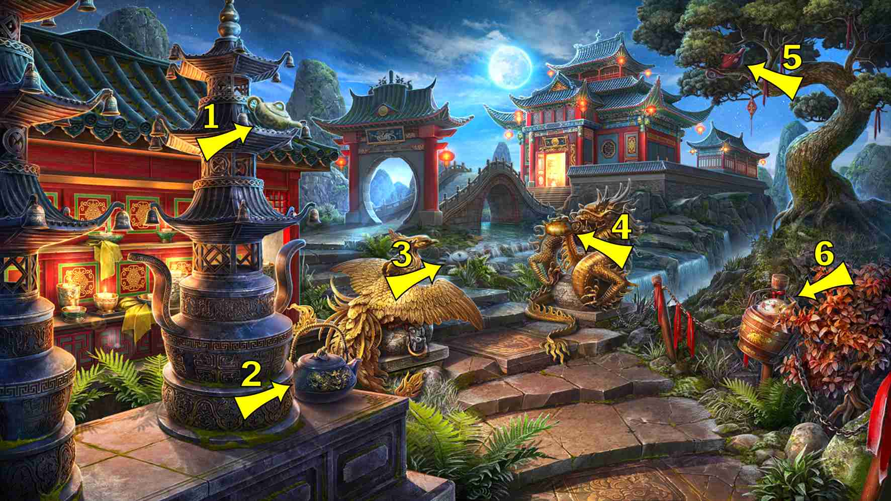
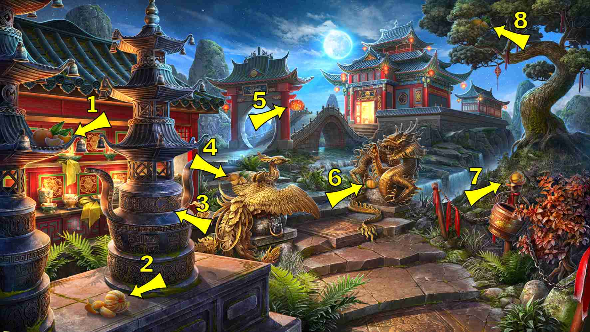
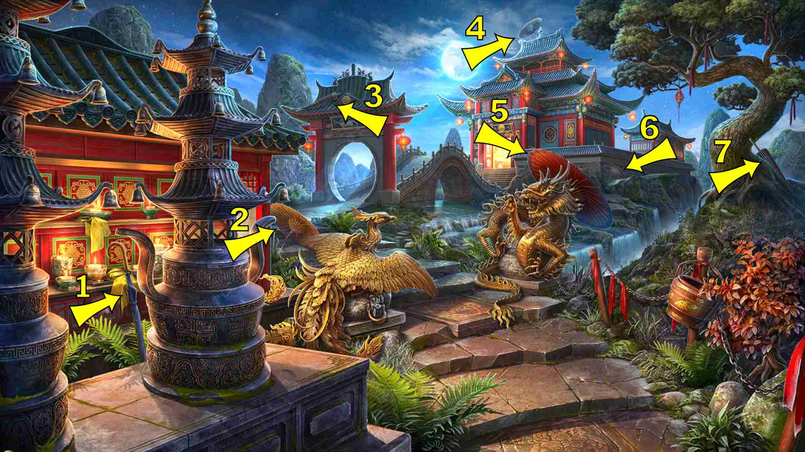
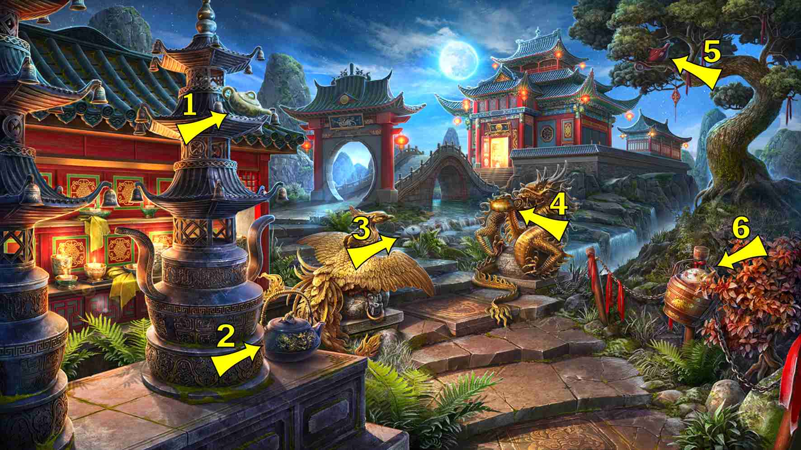
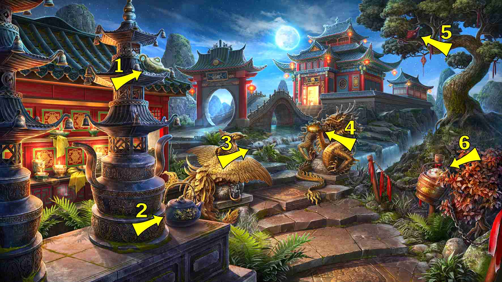
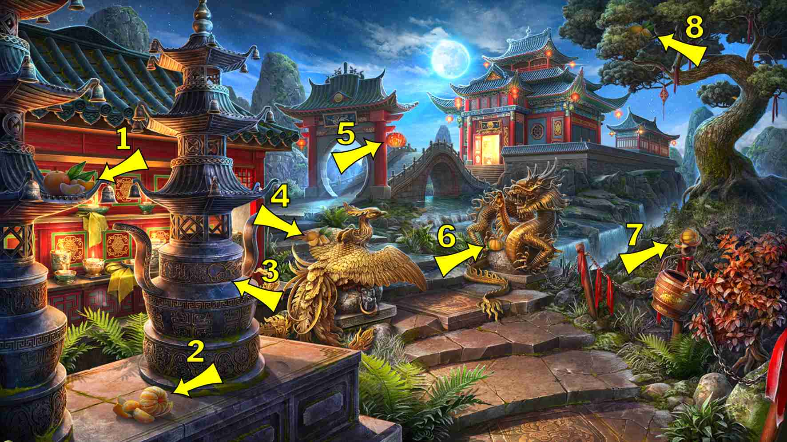
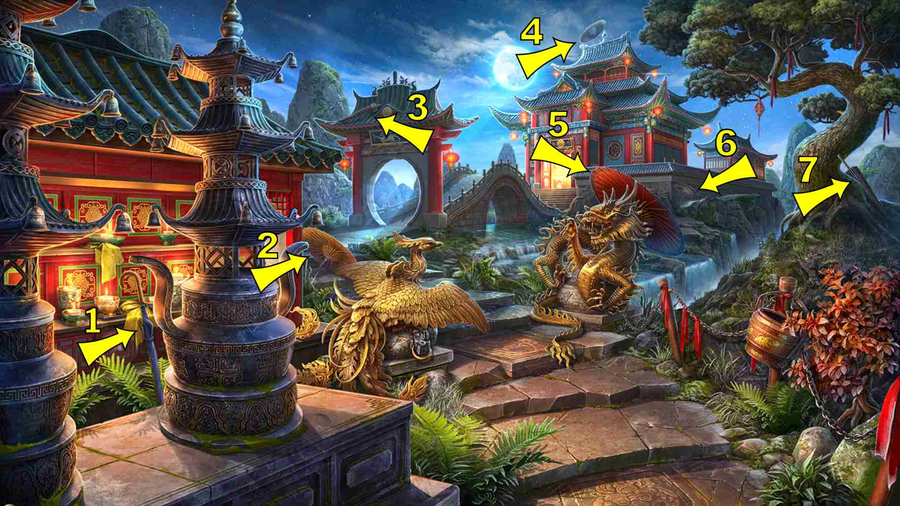
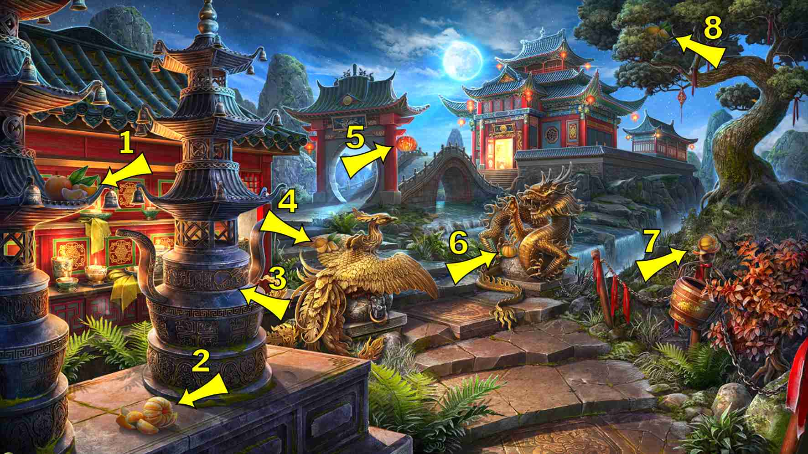
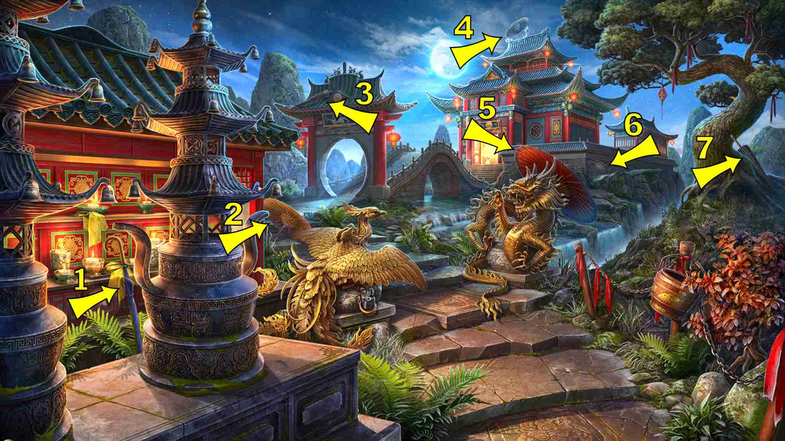

返回
Wiki
月光之门 Moon_Gate
B兵马俑
B拨浪鼓
C财神
D斗笠
F粉饼盒
F风筝
F风铃
G公鸡
G柑橘
H猴子
H红包
H花环
H蝴蝶结
J卷轴
L梨
L莲花
L锣
M蘑菇
M面具
M马蹄铁
M麻将牌
P派对爆竹
P琵琶
Q旗帜
Q秋千
S扇子
S扇子
S手提包
S手镯
S扫帚
S松果
S梳子
S水壶
S水壶
S沙漏
T桃子
W乌龟
W鼯鼠
X幸福结
X幸运饼干
X熊猫
X箱子
X鞋子
X项链
X香炉
Y烟斗
Y烟斗
Y烟花棒
Y阴阳图
Y雨伞
Y鱼
Z中式帽
Z猪
活动隐藏物品 Event Hidden Object
D斗笠 Asian Hat
B拨浪鼓 Bolang Gu
H蝴蝶结 Bow
S手镯 Bracelet
S扫帚 Broom
X箱子 Chest
Z中式帽 Chinese Cap
S梳子 Comb
S扇子 Fan, see "Hand Fan"
P派对爆竹 Firecrackers
Y鱼 Fish
Q旗帜 Flag
W鼯鼠 Flying Squirrel
X幸运饼干 Fortune Cookie
H花环 Garland
C财神 God of Wealth
L锣 Gong
S扇子 Hand Fan
S手提包 Handbag
M马蹄铁 Horseshoe
S沙漏 Hourglass
X香炉 Incense Holder
S水壶 Kettle

F风筝 Kite
X幸福结 Knot of Happiness
L莲花 Lotus
P琵琶 Lute
M麻将牌 Mahjong Tiles
M面具 Mask
H猴子 Monkey
M蘑菇 Mushrooms
X项链 Necklace
X熊猫 Panda
T桃子 Peach
L梨 Pear
Z猪 Pig
S松果 Pinecone
Y烟斗 Pipe
S水壶 Pitcher
F粉饼盒 Powder Box
H红包 Red Envelope
G公鸡 Rooster
J卷轴 Scroll
X鞋子 Shoe
Y烟斗 Smoking Pipe, see "Pipe"
Y烟花棒 Sparklers
Q秋千 Swing
G柑橘 Tangerine

B兵马俑 Terracotta Warrior
W乌龟 Turtle
Y雨伞 Umbrella

F风铃 Wind Chime
Y阴阳图 Yin Yang


 



 


